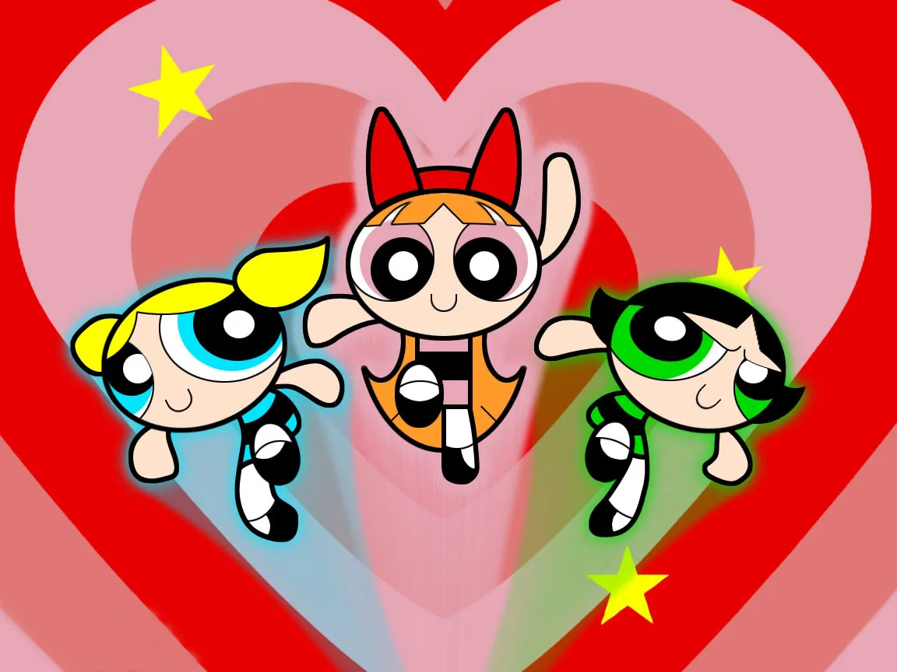

Home
The Powerpuff Girls

About this recipe
Accidentally created in a lab by Professor Utonium, superpowered sisters Blossom, Bubbles and Buttercup regularly save Townsville from evildoers such as Mojo Jojo, the Gangreen Gang and Him. Blossom is the self-proclaimed leader of the trio, Bubbles is the cute one and Buttercup is the toughest one.
Ingredients
- Sugar
- Spice
- Everything nice
- Chemical X
Steps to make:
- Gather all your ingredients.
- Add sugar, spice, and everything nice to a large black cauldron
- Stir ingredients and contemplate whether you should really add chemical X...
- Add chemical X to pot and stir.
- ???
- Profit